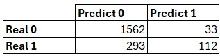

Introduction
Overview
The code provided implements an Artificial Neural Network (ANN) to solve a binary classification problem, specifically churn analysis in a bank. The objective is to predict whether a customer will leave the bank based on characteristics such as credit score, gender, age, balance, among others. We use a dataset (Churn_Modelling.csv) and build a model that includes data preprocessing, ANN construction, model evaluation, new case prediction, and optimization through cross-validation and hyperparameter tuning. The steps are explained in detail below, including what is done, why, and the meaning of the parameters used.
Use case
This project focuses on churn prediction for a bank, a common problem in the financial industry where retaining customers is critical. By identifying customers at risk of leaving, the bank can take proactive measures such as offering incentives or improving services to reduce churn rates.
Other specific applications of Artificial Neural Networks (ANNs) include:
ANNs are powerful tools for detecting complex patterns in large datasets, especially useful for prediction and classification in domains with high dimensionality.
GitHub code
The complete code this project is available on GitHub: Churn Prediction Code.
Python Code and Analysis
Part 1: Data pre-processing
Import Packages
Packages to be imported:
import numpy as np
import pandas as pd
from sklearn.preprocessing import LabelEncoder
from sklearn.preprocessing import OneHotEncoder
from sklearn.compose import ColumnTransformer
from sklearn.model_selection import train_test_split
from sklearn.preprocessing import StandardScaler
from keras.models import Sequential
from keras.layers import Dense
from keras.layers import Dropout
from sklearn.metrics import confusion_matrix
from scikeras.wrappers import KerasClassifier
from sklearn.model_selection import cross_val_score
from sklearn.model_selection import GridSearchCV
Import Dataset and define variables
# Import the data set
dataset = pd.read_csv('Churn_Modelling.csv')
# The first columns (0-2) contain information not relevant to the model, such as ID or name, which are discarded.
# X includes the predictor characteristics (e.g., credit score, gender, age, etc).
X = dataset.iloc[:, 3:13].values
# y is the target variable (0 or 1, indicating whether the client drops out or not).
y = dataset.iloc[:, 13].values
Coding categorical data
Now we utilize LabelEncoder to convert categorical variables in column 1 (country) and column 2 (gender) into numerical values, enabling compatibility with machine learning models. For example, countries such as "France," "Spain," and "Germany" are encoded as 0, 1, 2, and genders such as "Male" and "Female" as 0, 1.
This transformation is essential because machine learning algorithms require numerical inputs. To further optimize the data and avoid multicollinearity, we apply one-hot encoding for dummy variables, generating binary columns while ensuring redundancy is addressed by dropping one column where necessary.
labelencoder_X_1 = LabelEncoder() # Code column 1 (Country)
X[:, 1] = labelencoder_X_1.fit_transform(X[:, 1]) # Code column 1 (Country)
labelencoder_X_2 = LabelEncoder() # Code column 2 (Gender)
X[:, 2] = labelencoder_X_2.fit_transform(X[:, 2]) # Code column 2 (Gender)
One-Hot encoding to avoid multicollinearity
When using LabelEncoder for categorical variables like "country," where multiple categories exist, each country is assigned a numerical value (e.g., 0, 1, 2, 3). To address this, we apply one-hot encoding, creating a separate binary column (0 or 1) for each country. However, to avoid multicollinearity when generating columns for, say, three countries, we remove one column after encoding. This ensures that the absence of a 1 in the remaining columns implicitly indicates the third country, maintaining data integrity and model efficiency.
transformer = ColumnTransformer(
transformers=[
("Churn_Modelling", # Transformation arbitrary name
OneHotEncoder(categories='auto'), # Class to transform
[1] # Columns to Transform
)
], remainder='passthrough'
)
X = transformer.fit_transform(X) # Up to this point we have generated 3 columns
X = X[:, 1:] # discard 1 column to avoid multicollinearity
Data splitting and variable normalization
We proceed by splitting the dataset into training and testing sets, allocating 80% of the data for training (X_train, y_train) and 20% for testing (X_test, y_test) with a test_size of 0.2 and random_state=0 to ensure reproducibility. This division enables the model to learn from the training set while evaluating its performance on unseen data in the test set, with the 20% split being a standard practice for balancing training and evaluation.
Subsequently, we apply StandardScaler to standardize the independent variables, transforming them to have a mean of 0 and a standard deviation of 1. The scaler is fitted and applied to X_train using fit_transform to compute and apply the scaling parameters, while X_test is transformed using the same parameters via transform to prevent data leakage. This standardization enhances the performance of neural networks by ensuring all input features are on a consistent scale, preventing variables with larger ranges from disproportionately influencing the learning process.
# Create train and test sets
X_train, X_test, y_train, y_test = train_test_split(X, y, test_size = 0.2, random_state = 0)
# Variable scaling
sc_X = StandardScaler()
X_train = sc_X.fit_transform(X_train)
X_test = sc_X.transform(X_test)
Part 2: Building the ANN
We now proceed with the construction of the artificial neural network (ANN), utilizing the packages outlined in the first point of this section. Specifically, we import tools from Keras to build the ANN. The Sequential class enables the creation of a model by stacking layers sequentially, while Dense defines fully connected layers to establish the network’s architecture. Additionally, Dropout is incorporated as a regularization technique to mitigate overfitting, enhancing the model’s generalization capability.
Initialize the ANN
To construct the artificial neural network (ANN), we follow a structured sequence of steps to ensure a robust and effective model. We begin by initializing the ANN using the Sequential class from Keras, which creates an empty sequential model to which layers can be added in an orderly manner. This approach facilitates a clear and modular architecture, allowing us to build the network layer by layer.
classifier = Sequential()
Add input layer and first hidden layer
Next, we add the input layer and the first hidden layer. The input layer is defined within a dense layer comprising 6 neurons, with weights initialized using a uniform distribution (kernel_initializer="uniform") and activated by the ReLU function (activation="relu"). This layer accepts 11 input variables, reflecting the dataset’s features after one-hot encoding and the removal of one column to avoid multicollinearity (input_dim=11). The choice of 6 neurons is based on a common heuristic, averaging the number of input features (11) and the output (1). To enhance model robustness and prevent overfitting, a Dropout layer is incorporated, randomly deactivating 10% of the neurons (p=0.1) during each training iteration. This forces the network to learn more generalized representations, reducing dependency on specific neurons.
"""
units = number of output nodes in the layer
input_dim = number of input nodes of the layer, in this case they are the 11 indept. var.
kernel_initializer = allows to choose with which distribution the weights are generated at the beginning of the algorithm.
of the algorithm
activation = activation function to be used. “relu” is the unitary linear rectifier function.
linear unit rectifier function
One practice is to use as units the average between the number of nodes of the input layer and the output layer.
input layer and the output layer. In our case the input layer has 11 and the output layer has 1, so the average is 6.
output layer 1 so the average is 6
"""
# Add input layers and first hidden layer
classifier.add(Dense(units = 6, kernel_initializer = "uniform", activation = "relu", input_dim = 11))
classifier.add(Dropout(rate = 0.1)) #rate: probability of deactivating a neuron or the fraction of neurons to be deactivated
Add second hidden layer
We then add a second hidden layer to capture more complex relationships within the data. This layer is also a dense layer with 6 neurons, maintaining the same uniform weight initialization and ReLU activation as the first hidden layer for architectural consistency. Since Keras automatically infers the input dimensions from the previous layer’s output (6 neurons), no input_dim specification is required. Another Dropout layer with a 10% deactivation rate is included to further mitigate overfitting, ensuring the model remains adaptable to unseen data.
"""
We don't use the input dim in the second hidden layer, because you already know that the first layer
returns 6 nodes
"""
# Add the second hidden layer
classifier.add(Dense(units = 6, kernel_initializer = "uniform", activation = "relu"))
classifier.add(Dropout(rate = 0.1))
Add output layer
Finally, we define the output layer, which consists of a single dense neuron (units=1) to produce a binary prediction (e.g., whether a customer churns, 0 or 1). The sigmoid activation function (activation="sigmoid") is employed to output a probability between 0 and 1, making it suitable for binary classification tasks. Consistent with prior layers, weights are initialized uniformly (kernel_initializer="uniform") to maintain a balanced starting point. This carefully designed architecture, with sequential layers, ReLU activations, dropout regularization, and a sigmoid output, equips the ANN to effectively model the data while balancing complexity and generalization.
"""
The sigmoid function is the most interesting function for the exit layer.
It shows us the probability that the customer leaves the bank or not.
It is useful when I want to classify between two categories. For more than two categories we would have
to change things, the parameter units would no longer be 1, but it would be the number of classes.
We would also have to change the function, maybe to a step or relu function, because the
sigmoid goes between 0 and 1.
"""
# Add the output layer
classifier.add(Dense(units = 1, kernel_initializer = "uniform", activation = "sigmoid"))
Compile the ANN
Following the construction of the artificial neural network (ANN), we proceed to compile the model to prepare it for training. Compilation involves configuring the model with key components: the optimizer, the loss function, and the evaluation metric.
We select the Adam optimizer (optimizer="adam") due to its efficiency and ability to adaptively adjust the learning rate, facilitating faster convergence. For the loss function, we employ binary cross-entropy (loss="binary_crossentropy"), the standard choice for binary classification tasks, as it effectively measures the discrepancy between the predicted probabilities and the actual binary labels. Additionally, we track the model’s performance using accuracy (metrics=["accuracy"]), which calculates the percentage of correct predictions during training.
These settings—Adam optimization, binary cross-entropy loss, and accuracy monitoring—ensure the ANN is well-equipped to learn from the data and evaluate its predictive performance accurately.
classifier.compile(optimizer = "adam", loss = "binary_crossentropy", metrics = ["accuracy"])
Adjusting the ANN to the Training Set
With the artificial neural network (ANN) compiled, we now focus on training it by fitting the model to the training dataset. This step involves iteratively adjusting the model’s weights to minimize the binary cross-entropy loss defined during compilation. The training process employs a batch size of 10 (batch_size=10), meaning the model processes 10 samples at a time before updating the weights, striking a balance between computational efficiency and training stability.
Additionally, we set the number of epochs to 100 (epochs=100), allowing the model to pass through the entire training dataset 100 times. This extensive iteration enables the ANN to deeply learn the underlying patterns in the data, refining its predictive capability.
By carefully tuning these parameters—batch_size and epochs—the model optimizes its performance while maintaining stability during training.
classifier.fit(X_train, y_train, batch_size = 10, epochs = 100)
Video 1: Adjust ANN
Part 3: Evaluating the model and calculating final predictions
We now embark on a new phase where we evaluate the performance of the artificial neural network (ANN) and generate predictions.
This process begins by using the trained model to predict probabilities for the test dataset (X_test), leveraging the sigmoid activation function in the output layer, which yields values between 0 and 1. To obtain binary classifications (0 or 1, representing whether a customer churns or not), we apply a threshold of 0.5 (> 0.5), assigning a prediction of 1 (churn) if the probability exceeds 0.5 and 0 (no churn) otherwise. This threshold-based approach ensures clear, interpretable results for binary classification.
Subsequently, we assess the model’s performance through a confusion matrix, which provides a detailed breakdown of correct and incorrect predictions, enabling a comprehensive evaluation of the ANN’s accuracy and effectiveness.
Test set prediction and confusion matrix
# Prediction of results with the Testing Set
y_pred = classifier.predict(X_test)
y_pred = (y_pred>0.5)
# Elaborate a confusion matrix
cm = confusion_matrix(y_test, y_pred)
print((cm[0][0]+cm[1][1])/cm.sum())
Figure 1: Confusion Matrix
To evaluate the performance of our artificial neural network (ANN), we analyze the confusion matrix, which provides a detailed breakdown of the model’s predictions compared to the actual outcomes. The matrix is structured with rows representing the true classes (actual labels) and columns indicating the predicted classes. Specifically, row 0 corresponds to customers who did not churn (class 0), and row 1 represents those who did churn (class 1). Similarly, column 0 reflects predictions of no churn (class 0), and column 1 denotes predictions of churn (class 1).
The elements of the confusion matrix reveal the following: the [0,0] position, with 1562 true negatives (TN), indicates customers who did not churn and were correctly predicted as such by the model. The [0,1] position, with 33 false positives (FP), represents customers who did not churn but were incorrectly predicted to have churned. Conversely, the [1,0] position, with 293 false negatives (FN), shows customers who churned but were wrongly predicted as not having churned. Finally, the [1,1] position, with 112 true positives (TP), reflects customers who churned and were accurately identified by the model.
To quantify the model’s overall performance, we calculate the accuracy as (cm[0][0] + cm[1][1]) / cm.sum(), yielding a value of 0.837. This indicates that the ANN correctly classified 83.7% of the customers in the test set, demonstrating a strong ability to distinguish between churners and non-churners, though there remains room for improvement in reducing false negatives and false positives to enhance predictive reliability.
Part 4: Evaluating, Improving and Adjusting the ANN
To evaluate, improve and tune the performance of the artificial neural network (ANN) model, a 10-fold cross-validation process was implemented. This approach allows the robustness of the model to be evaluated by dividing the data set into ten different subsets. In each iteration, the model is trained with nine of them and validated with the remaining one, rotating the validation fold in each cycle. In this way, a more reliable estimate of the overall model performance is obtained, as the dependence on a single data partition is minimized.
The technical implementation was done using the scikit-learn cross_val_score function, using the KerasClassifier wrapper to integrate a model built with Keras within the scikit-learn flow. The function in charge of building the neural network (build_classifier) defines a basic architecture with twoservice hidden layers and an output layer for binary classification. In the cross-validation, the following parameters were set: a batch_size of 10, 100 training epochs (nb_epoch=100), and the use of all available processor cores (n_jobs=-1) to speed up the process. The parameter verbose=1 allows to visualize the progress during the execution.
In addition, as a regularization technique, Dropout layers were included at a rate of 10% (p=0.1) in the hidden layers of the model. This technique consists of randomly deactivating a subset of neurons during training, which reduces co-adaptation between them and helps prevent overfitting. It is important to note that Dropout is only applied in the hidden layers and not in the output layer, so as not to negatively affect model predictions.
The result of this process is a more stable and accurate estimate of model performance, represented by the mean and variance of the accuracies obtained in the different folds. While the mean reflects the average accuracy achieved, the variance allows us to evaluate the stability of the model against different subsets of data.
Part 4: Evaluating, Improving and Adjusting the ANN Code
def build_classifier():
classifier = Sequential()
classifier.add(Dense(units = 6, kernel_initializer = "uniform", activation = "relu", input_dim = 11))
classifier.add(Dense(units = 6, kernel_initializer = "uniform", activation = "relu"))
classifier.add(Dense(units = 1, kernel_initializer = "uniform", activation = "sigmoid"))
classifier.compile(optimizer = "adam", loss = "binary_crossentropy", metrics = ["accuracy"])
return classifier
classifier = KerasClassifier(build_fn = build_classifier, batch_size = 10, epochs = 100)
accuracies = cross_val_score(estimator=classifier, X = X_train, y = y_train, cv = 10, n_jobs=-1, verbose = 1)
mean = accuracies.mean()
variance = accuracies.std()
print(mean, variance)
The mean accuracy value (mean ≈ 0.8401) indicates that, on average, the neural network model managed to correctly classify approximately 84% of the cases during cross-validation. This level of accuracy suggests a good overall performance of the model on the binary classification task, showing that it is able to learn relevant patterns in the training data.
On the other hand, the variance of the accuracy (variance ≈ 0.0185) provides information on the stability of the model against different partitions of the data set. A low variance value such as this indicates that the model performance is fairly consistent across the different folds of the cross-validation. In other words, the model is not overly dependent on a particular subset of data, which is a positive indication of generalization.
Part 5: Fine Tuning the ANN
To improve the performance of the artificial neural network model, a Grid Search hyperparameter tuning technique will be implemented. This process consists of systematically testing different combinations of values for certain key hyperparameters, with the objective of identifying the configuration that maximizes the performance of the model. In this case, the scikit-learn GridSearchCV class will be used, together with the KerasClassifier wrapper that allows the integration of Keras models into the scikit-learn ecosystem.
Code to Fine Tune the ANN
def build_classifier(optimizer):
classifier = Sequential()
classifier.add(Dense(units = 6, kernel_initializer = 'uniform', activation = 'relu', input_dim = 11))
classifier.add(Dense(units = 6, kernel_initializer = 'uniform', activation = 'relu'))
classifier.add(Dense(units = 1, kernel_initializer = 'uniform', activation = 'sigmoid'))
classifier.compile(optimizer = optimizer, loss = 'binary_crossentropy', metrics = ['accuracy'])
return classifier
classifier = KerasClassifier(build_fn = build_classifier)
parameters = {'batch_size': [25, 32],
'epochs': [100, 500],
'optimizer': ['adam', 'rmsprop']}
grid_search = GridSearchCV(estimator = classifier,
param_grid = parameters,
scoring = 'accuracy',
cv = 10)
grid_search = grid_search.fit(X_train, y_train)
best_parameters = grid_search.best_params_
best_accuracy = grid_search.best_score_
The function that builds the model was designed in a flexible way to accept different optimizers as a parameter. Thus, the grid search was able to evaluate the impact of using two popular optimizers, Adam and RMSprop, by comparing their effectiveness in training. In addition, different batch sizes (batch_size) of 25 and 32 were tested, as well as different numbers of training epochs, specifically 100 and 500. These combinations seek to explore how the performance of the model varies as both the learning rate and the training duration are modified.
The evaluation of each hyperparameter combination was performed by 10-fold cross-validation, using accuracy as a performance metric. This strategy ensures robust and reliable performance estimation, as each configuration is tested on multiple partitions of the training set. At the end of the search, the grid_search object provides both the best hyperparameters found (best_params_) and the average accuracy associated with that configuration (best_score_).
Conclusions
Hyperparameter tuning using GridSearchCV determined that the best parameter combination for ANN is: batch_size=25, epochs=100 and optimizer='adam'. With this configuration, an average accuracy (best_accuracy) of 0.84875 (84.875%) was achieved in 10-fold cross-validation. This result indicates an improvement in model performance compared to the initial accuracy of 0.837 obtained on the test set, suggesting that these hyperparameters optimize learning for this classification problem.
The use of adam as an optimizer and a moderate batch_size (25) seems to balance stability and convergence speed, while 100 epochs are sufficient for effective training without significant overfitting. However, given the class imbalance, it would be advisable to explore additional metrics such as F1-Score for the minority class (dropout customers) and consider techniques to improve their detection.